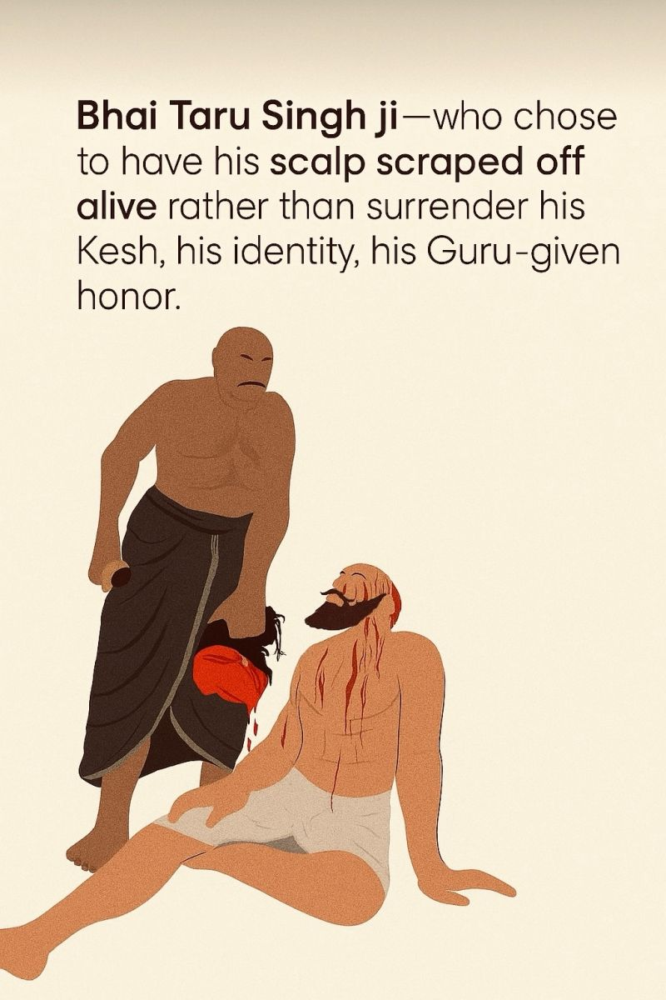
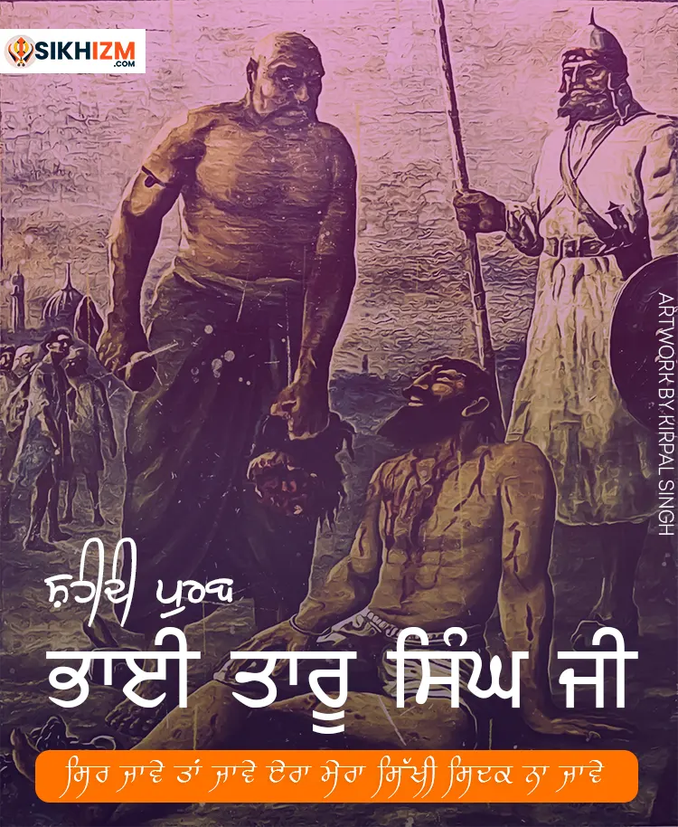

Fearless Sikh Martyr and Symbol of Unwavering Faith
Bhai Taru Singh Ji was a devoted Sikh martyr known for his extraordinary courage and sacrifice during the persecution of Sikhs under Mughal rule in the 18th century. He chose to endure great suffering rather than renounce his faith.
Bhai Taru Singh Ji was born in 1720 in Amritsar. From an early age, he was deeply devoted to Sikh teachings and served the community with humility and devotion. He worked as a gardener and helped maintain the sacred grounds of the Golden Temple.

When Mughal authorities tried to force Bhai Taru Singh Ji to convert to Islam, he refused steadfastly. As punishment, his scalp was brutally removed. Despite his immense suffering, he remained unwavering in his faith and passed away shortly after, becoming a symbol of Sikh resilience.

Bhai Taru Singh Ji’s sacrifice remains a powerful inspiration for Sikhs worldwide. His story exemplifies devotion, courage, and steadfastness in the face of oppression, reminding all to stand firm in their beliefs.